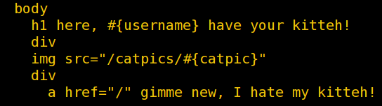
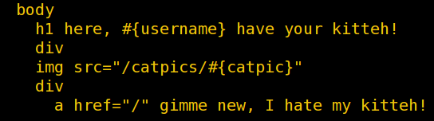
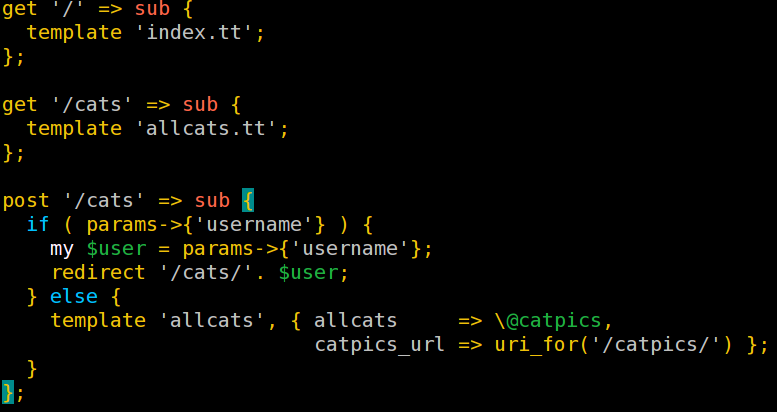

Web Frameworks - A Love Hate Relationship
god, we tried so many horrible things to make something good...
... remember this?
the GIF patent discussion
image maps
SSI
we used hidden fields A LOT
... or back when ...
somebody invented mod_perl
the world put sessions in URLs
we got PHP/FI and mSQL
... but suddenly ...
somebody thought XML was great
we got CSS and the use of tables was frowned upon
WE STOPPED WRITING HTML TAGS LIKE THIS
everybody hated the use of JavaScript
and then this happened...
people loved JavaScript
we got Rails and jQuery and Unicorns
everything was pretty all of a sudden!
and all browsers got their shit together
we now have Web Three And A Half - CSS3 and HTML5
btw. these slides require JavaScript because you can't pageDown a full screen because for old "reading text" usability reasons - you always get xx lines of the previous screen. I hate web. NO BOOK DOES THAT.
early frameworks in Perl
CGI.pm
CGI::Application
Mason
Maypole
but - did websites change?
well, they're not called "homepage" anymore, Toto, not even in Kansas!
varieties
Enterprise Domain Specific Specialized Subscriber Only
Social Foobar
Little Every Day Company Page
Shops
SÖRVICES! err SERVICES!
APIs
so everything got complicated like hell?
YES!
Well.
NO!
but.. FRAMEWORKS!
it still is HTTP, form handling, the infamous back button, faking "state" somehow, input validation, sessions, authenticate and authorize and now it all has to even look good and behave nicely!
so, what do we have today?
kind of the mother of all modern frameworks
Ruby: Rails, Sinatra
and her derivatives
Python: Django, Flask
Perl: Catalyst, Dancer, Mojolicious
(not talking about old stuff anymore, really not!)
JavaScript: Express, Meteor
and these...
Java: Well that's a league of its own
PHP: that too
everybody has one these days!
yes, everybody!
Smalltalk: Seaside, Illiad
R: Shiny (not kidding, I'll show you)
Haskell: Yesod
Erlang: Web Machine
COBOL: NOW WITH CGI SUPPORT!
how to categorize available frameworks?
no, they're not all MVC - Routes - Templates - ORM combinations
but let me show you
we have 'tis amazing kitty application...
kitties served with flaskkitties served with sinatra
kitties served with dancer
kitties served with mojolicious
which looks like this in...
Python - Flask - Jinja

Ruby - Sinatra - Slim
 

Perl - Dancer - Template Toolkit
Perl - Mojolicious - Mojo's Templates

To let it really sit with you for a second:
routes:
Flask
@app.route('/cats/')
Sinatra
get '/cats/:user' do
Dancer:
get '/cats/:user' => sub {
Mojolicious:
get '/cats/:user' => sub {
your params:
Flask
user = request.form['username']
Sinatra
username = params[:user]
Dancer
my $user = params->{'username'};
Mojolicious
my $user = $c->param('user');
templates:
Jinja
<h1>here, {{ username }} have your kitteh!</h1>
Slim/Jade
h1 here, #{username} have your kitteh!
Template Toolkit
<h1>here, [% username %] have your kitteh!</h1>
Mojo
<h1>here, <%= $username %> have your kitteh!</h1>
not really much of a difference, eh?
the devil is in the details
what kind of helpers? any validation helpers?
before, after rendering hooks?
model integration/ORM?
how to deal with sessions?
does it have flash messages?
authentication and authorization?
does it have plugins or something similar?
good documentation? lots of folklore, best practices, examples, real applications to take a look at?
So, anything else?
YES!
two different way of thinking a web application
"loose"
service oriented
steve yegge's amazon service rant
"raw"/everything exposed
high level of control over the entire request/response cycle
"tight"
highly integrated
application oriented
"like real GUI programming"
oh god, please don't make me touch HTML/CSS
components
coming with everything out of the box
why would I even bother with templates?!
"very raw, high level of control"
Erlang's "Web Machine" (also in Ruby, Perl, Node)
Mongrel2 (ok, not really a web framework)
back in the day: mod_perl (Yes!)
"like GUI, components, tightly integrated"
Smalltalk's Seaside
R's Shiny (for the name alone.. :)
let's take a look:
Web Machine:
the resource is "the thing" you have
WOAH, state engine! see the insane diagram over at basho's
insane state diagram{kind=link}
running through every step of request/response PER RESOURCE
having 50 or so subs/functions exposing every step of the way (plus some helpers)
kitties served by web machinelooks like this:
sub allowed_methods { [qw[ GET POST ]] } sub content_types_provided { [{ 'text/css' => 'to_css'}, {'text/html' => 'to_html' }] }
and you take care of the details
sub process_post { ... } sub to_html { ... } sub to_css { ... }
a bit more of the example

advantages
very high control
of RESTful buddha nature
you can do with it whatever you want
combine it with whatever you like
#dammitstevan
caveats
you have to do everything yourself, by hand
you better really know HTTP
needs to be combined with other tools/modules
Mongrel2
not really a web framework, ok
great concept: route pointing to a ZeroMQ handler!
very service-ish
sadly a bit weird, SQLite to store, config = python code
looks like this
'/kittehz/': Handler(send_spec='tcp://127.0.0.1:9996', send_ident='barbarbabar', recv_spec='tcp://127.0.0.1:9999', recv_ident='bazbazbaz')
when to use "loose"
great for APIs
when you really REALLY want REST all the way
when you hate everything else and roll your own
because you can
Smalltalk Seaside
you program an application, a GUI, a "page", a component
coolest shit feature EVAR: edit in client, updated automatically on server and the other way around
kitties served by seasidelooks like this
advantages
everything is an object and they REALLY mean it
pretty cool language
they invented everything anyways, why not use the orginal
if you know Smalltalk (haha) and know GUI programming it's extremely productive
never bother to touch HTML or CSS on your own (bah. tsk.)
good argument: "99% of all websites are small, we don't need to scale"
caveats:
extremely alien if you come from the "regular" kinds of frameworks
you better REALLY know OO
so tightly intergrated to Smalltalk images - you can't even easily version it ghetto language problem (they do everything EVERYTHING their own way. Ok, they invented most ways, but..)
so tightly integrated and so much magic that .. good luck if something doesn't work
no folklore, no examples in the wild to take a look at
R's Shiny
reactive
whip up reactive, interactive charts in minutes
very short code, feels a bit declarative
kitties served by shinylooks like this
server part
shinyServer ( function (input, output) { output$caption <- renderText( { paste("here ", input$username, " have your kitteh!") } ) })
ui part
shinyUI( pageWithSidebar( mainPanel( h3( textOutput("caption") ), imageOutput("catpic") ) ))
advantages
R... *LOL* .. now that's is a thing.. wow :)
most people know it as "statistic's thing"
it's a statistics environment with a programming language behind (books usally have like 2 pages about "the language")
you "use it" more than really "program it"
really well done in terms of "serve this data"
great examples
R in general has very nice documentation
"CRAN" (modules are called cranberries :)
caveat
do not look into the code as a developer. really don't
magic behind it to the extreme.
it's a total special interest thing - but at least extremely practical
when to use "tight"
productivity & whipuptitude
"I just want this little thing.."
you hate templates
"we have this big enterprise thing running for 15 years now.."
because you can
other things to think about
almost all functional languages wrap HTML and CSS into their language, partially even JavaScript
there's also the concept of CouchDB to just HTTP directly with your database - Tim Bunce has something vaguely related with DBIC/Web Machine: "WebAPI::DBIC"
templates? really? why not have real widgets?
VERDICT
docs and tutorials: Flask - in particular "The Flask Mega Tutorial"
whipuptitude: Shiny - and I don't even really know R
cherries on the cake: Mojolicious because of surrounding helpers/functions
cool feature: Seaside - the client server editing is just the thing!
famous last words
in the end, the "cool" stuff is worthless
if it's buggy or broken,
not really used in the wild,
has no docs,
no community to speak of,
is too alien,
or doesn't play well with others
in that regard, "popular" and "worse" IS better.
Thank You Very Much!
and that's how catpics are REALLY made